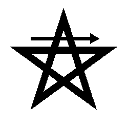
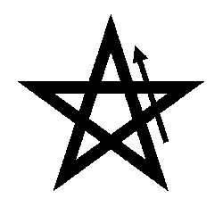
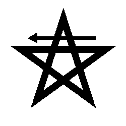
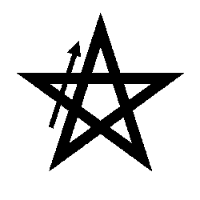

|
Ritual Menor de Destierro del Pentagrama
presentado por Heru-ha-ra
El Ritual Menor de Destierro del Pentagrama (RMDP) es quizá el más conocido de los rituales de la magia ceremonial, y muchos lo consideran como un preliminar básico ante cualquier otro trabajo mágico.
Existen varias versiones en uso de este ritual, aunque la original ha de ser atribuída a la Golden Dawn. Para esta orden resultaba tan esencial, que era el único ritual enseñado a sus miembros antes de que estos desembocaran en el Conocimiento y Conversación de su Ángel. Aún hoy, muchos magos comienzan su andadura con la práctica del RMDP.
Propósito
El RMDP sirve para limpiar la zona de influencias indeseadas, tanto externas como internas. En otras palabras, el RMDP nos trae al momento presente acabando con los pensamientos obsesivos y las distracciones. Cuando es realizado regularmente, se trata de un ritual extremadamente útil para "limpiarnos" y poder ir haciendo que se manifiesten aquellas cosas de nuestro inconsciente que están frenando precisamente nuestra capacidad de acercarnos a tal momento presente.
Como preliminar al trabajo mágico, el RMDP también nos introduce dentro del espacio ritual. Delimita dónde termina el mundo "normal" y donde comienza el mundo "mágico". La limpieza se produce sobre el espacio del templo personal del mago, y también sobre su espacio mental: un ritual no es un lugar en el que dejar entrar las preocupaciones mundanas, y el RMDP es una notable ayuda para poder concentrarse en la tarea a realizar.
El concepto del pentagrama es central al ritual. Al estar orientado con la punta que simboliza el Espíritu hacia arriba, expresa el dominio del Espíritu sobre la Materia. Esto quiere decir que el ritual involucra también la aspiración del mago de alzar su consciencia hacia su Ángel, para conseguir añadir el elemento Espíritu (correspondiente a la letra hebrea Shin) a su ecuación, de modo que se convierta su fórmula de cuatro elementos YHVH en YHSVH.
Podríamos deducir pues que el RMDP sirve al objetivo del Conocimiento y Conversación del Ángel Guardián. En este sentido puede ser complementado con otros rituales, como el Star Ruby diseñado por Aleister Crowley. Este autor utilizó una variante aún más compleja para el logro de su Conocimiento y Conversación, que puede encontrarse en su Liber Samekh.
Preliminares
El mago deberá proveerse de:
- Una daga, con la que llevará a cabo los gestos de la Cruz Cabalística y trazará los pentagramas. En caso de no tener una, aún puede usar el dedo índice.
- Un símbolo apropiado para cada uno de los cuatro elementos, desplegados a ser posible en su altar.
En cualquier caso es posible utilizar cualquier tipo de equipamiento, siempre que su simbolismo se encuentre armonizado con el ritual o posea un propósito definido. Esto afecta también a cualquier parte del ritual. Recordemos que todos los actos son simbólicos, y que no estamos ante una religión dogmática sino ante una operación que se constituye como causa que produce resultados. En la magia se favorece la idea de crear por uno mismo, pues ni las necesidades ni los símbolos son los mismos para todos. De hecho, para el mago que entienda los objetivos de un ritual, el resultado será mejor si utiliza sus propios símbolos. Es con su parte "inconsciente", y no con el de otro, con lo que se está comunicando.
Parte I : La Cruz Cabalística
En esta primera parte, el mago construye una cruz en su "cuerpo astral" que representa el equilibrio entre opuestos, y se sitúa como el centro de su propio universo.
En pie, mira hacia el Este.
Toma la daga con la mano derecha.
Visualiza un punto de luz muy brillante sobre tu cabeza. Imagina que su origen es "divino", y que es una minúscula porción. Apunta con la daga hacia su posición, mientras haces que el punto de luz descienda entrando en tu cabeza por el centro de su parte superior.
Haz descender el punto de luz, y cuando se encuentre entre tus ojos y ligeramente por encima (coincidiendo con la localización del Tercer Ojo), vibra la palabra: AH-TEH (significa: "tú eres").
Dirige el punto de luz con la daga atravesando el centro de tu cuerpo hasta llegar hasta el suelo. Cuando llegue a él, vibra: MAL-KUT (significa: "el Reino").
Un rayo de luz atraviesa tu cuerpo de arriba abajo. Ahora alarga el brazo derecho en línea recta con un ángulo de 90 grados, y toma la daga con la izquierda. Dirige la luz desde el centro de tu cuerpo hasta la punta de los dedos de la mano derecha, hasta que se pierda en el universo. Mientras diriges este rayo, vibra VI-GE-VU-RAH (significa: "el Poder").
Ahora haz lo mismo pero extendiendo tu brazo izquierdo y usando la daga en la mano derecha. Dirige la luz desde el centro a la punta de los dedos de la mano izquierda, y mientras lo haces, vibra VI-GE-DU-LAH (significa: "la Gloria").
Por último, deja la daga y une los brazos en tu pecho, como si fueras a rezar. Visualiza en el punto en el que tienes en contacto las manos, dentro de tu pecho, un fulgor dorado. Vibra LEI-OH-LAM, AH-MEN. (significa: "por siempre")
Quedará más clara la cuestión del equilibrio entre opuestos, al destacar que las referencias en los dos brazos de la cruz son a las sephiroth Gevurah (derecha) y a Gedulah-Chesed (izquierda).
Parte II : El Trazado de los Pentagramas
Ahora tendrás que trazar cuatro pentagramas. El trabajo de visualización puede parecer bastante complicado, sobre todo al principio, pero esta es precisamente una buena forma de mejorar tus habilidades de visualización.
Mira hacia el Este, y traza con la daga un pentagrama de Aire. Imagínalo de color azul claro. Tienes que comenzar por el vértice que indica el esquema y seguir en la dirección indicada, para dibujar en el aire el pentagrama con un sólo trazo terminando donde empezaste:

Una vez lo hayas trazado, sitúa tus manos en los laterales de tu cabeza, rozando tus orejas, con la daga apuntando hacia adelante. Ahora, da un paso hacia adelante con la pierna izquierda mientras que arrojas las manos también hacia adelente, apuntando al centro del pentagrama. Mientras lo haces, vibra: YOD-HEH-VAU-HEH. El gesto que has hecho se llama el Signo del que Entra, y todo este movimiento ha de ser realizado de forma que se utilicen todas las energías posibles, como si se quisiera de un golpe agotar todo el cuerpo.
Regresa a la posición inicial recogiendo el pie izquierdo, y sitúa el dedo índice de tu mano derecha sobre tus labios. A este movimiento se le llama también el Signo del Silencio o del Dios Harpócrates, el egipcio Horus el Niño transformado en el Dios griego del Silencio, el Secreto, la infancia y el gozo infantil, representado como un niño con un dedo sobre sus labios. Su propósito en esta ocasión es retirar la fuerza del Signo del que Entra. El simbolismo de tal Signo del Silencio es especialmente profundo, e implica un profundo silencio mental libre de construcción alguna (como pensamientos), lo que hace muy buena idea que el mago lo entrene con especial ahínco. Relacionar un signo con el silencio mental, mejorando día a día la profundidad de tal estado, es una inestimable ayuda para el caminar del mago.
Con la daga en el centro del pentagrama, traza 1/4 de círculo de color blanco girando hasta apuntar hacia el Sur.
Dibuja de un sólo trazo un pentagrama de Fuego de color rojo:

Una vez trazado repite el mecanismo anterior: primero el Signo del que Entra (las manos en los lados de la cabeza, paso hacia adelante con la pierna izquierda), luego el Signo del Silencio al retirarte. Esta vez mientras das el paso adelante, vibra ADONAI
Sitúa la daga en el centro del pentagrama de fuego y traza 1/4 de círculo de color blanco. Gira hasta apuntar hacia el Oeste.
Dibuja de un sólo trazo un pentagrama de Agua de color azul oscuro:

De nuevo realiza el Signo del que Entra, seguido del Signo del Silencio. Cuando des el paso adelante con el pie izquierdo, vibra E-HE-IEH
Con la daga en el centro del pentagrama de agua, traza 1/4 de círculo de color blanco, hasta apuntar hacia el Norte.
Dibuja de un sólo trazo un pentagrama de Tierra de color marrón:

Realiza el Signo del que Entra, y el Signo del Silencio. Mientras das el paso adelante con el pie izquierdo, vibra AGLA
Apunta con la daga al centro del pentagrama de tierra, y cierra el círculo blanco hasta que apuntes al Este.
A continuación puedes hacer varias cosas. Es buena idea repasar y tener visualizados a la vez los cuatro pentagramas y la circunferencia a tu alrededor, aunque lo ideal sería que los tuvieras presentes durante todo el desarrollo hasta este punto. Puedes convertir la circunferencia en una esfera de luz blanca que te rodee y acabe así de delimitar el círculo mágico dentro del que vas a trabajar.
Algunos magos acaban de sellar la esfera con dos hexagramas (uno arriba y uno abajo) al considerar que este ritual es en cierto modo insuficiente y actúa como un señuelo para el astral que puede resultar problemático: no obstante, esta solución tiene el problema de que descuadra un poco el ritual debido a que el hexagrama representa (en la Parte III) el macrocosmos. Para evitar esto, es una buena idea llevar a cabo el Ritual Menor del Hexagrama después del RMDP.
Parte III : La Evocación de los Arcángeles
Esta última parte tiene un carácter más marcadamente relacionado con los elementos que las anteriores. No vas a necesitar la daga.
En primer lugar, extiende los brazos en forma de cruz, sintiéndote una luminosa cruz brillante en el centro del universo. Esta cruz también representa los cuatro elementos equilibrados, y no sería desaconsejable seguir visualizando el hexagrama -la rosa- en el centro de tal cruz.
Con los brazos extendidos, di "ante mí Rafael". Visualiza una figura entre las nubes, vestida con una túnica amarilla y morada, con una vara caducea en las manos. Hablamos del elemento aire, así que puedes imaginar viento proveniente de allí y demás.
Después di "detrás de mí Gabriel". Visualiza una figura rodeada por cataratas y otros elementos de agua, que es el elemento al que estás llamando. El arcángel tiene una túnica azul y naranja, y sostiene un cáliz.
Luego pronuncia "a mi derecha, Miguel". Visualiza un desierto (se trata del elemento fuego). El arcángel lleva una túnica escarlata y verde, y porta una espada llameante.
Finalmente di "a mi izquierda, Uriel". Visualiza un paisaje fértil, correspondiente a la tierra, estabilidad y fuerza. El arcángel en esta ocasión está vestido de verde y marrón, y sostiene un pentáculo.
Habitualmente se termina diciendo "ante mí arde el pentagrama, y detrás de mí brilla la estrella de seis puntas". Israel Regardie recomendaba imaginar el pentagrama en el pecho y la estrella de seis puntas en la espalda, para que el pentagrama no se confunda con los cuatro que se acaban de trazar: aquí, el pentagrama representa al microcosmos (al hombre) y el hexagrama o estrella de seis puntas (la estrella de David) representa el macrocosmos. Es por esto que a la operación en que se unen microcosmos y macrocosmos se la suele denominar 5=6.
Sin embargo, no parece haber un motivo claro para poner delante el pentagrama y detrás el hexagrama. Una opción bastante interesante la da Aleister Crowley, que prefiere decir "pues a mi alrededor arde el pentagrama y dentro de la columna brilla la estrella de seis puntas". Aquí, tal pentagrama que es el hombre sería representado por los cuatro elementos y con ellos los cuatro pentagramas ya trazados. La columna (que es el propio mago identificado con el Pilar del Medio, del Equilibrio) contendrá al hexagrama, tal que de llevarse a buen puerto la operación 5=6 se uniría al hombre con lo divino, añadiendo a sus cuatro componentes la Shin del quinto elemento, el Espíritu. Crowley afirmó al respecto sobre este ritual, que "entendido adecuadamente, es la Medicina de los Metales y la Piedra del Sabio".
Es bastante habitual sustituir también a los arcángeles por otros elementos. No a todo el mundo le resultan adecuados los Arcángeles, pero lo importante es que lo utilizado ha de simbolizar los cuatro elementos que han de ser armonizados.
Esta parte del ritual tiene unos orígenes realmente antiguos. Proviene una invocación hebréa de la protección de los ángeles, que puede resultar más completa que la estándar para el mago, ya que acaba mencionando el Espíritu: "En el nombre del Señor, el Dios de Israel, que Miguel esté a mi derecha; Gabriel a mi izquierda; Uriel ante mí; Rafael tras de mí, y la Shejiná de Dios sobre mi cabeza". Como curiosidad, esta oración parece ser que proviene de un rezo babilonio: "Ante mí Shamash, tras de mí Sin, Nergal a mi derecha, Ninib a mi izquierda".
Parte IV : La Cruz Cabalística
Como último añadido opcional, algunos repiten la Cruz Cabalística al final, con la misma estructura que al principio.
|
 RSS
RSS